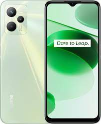
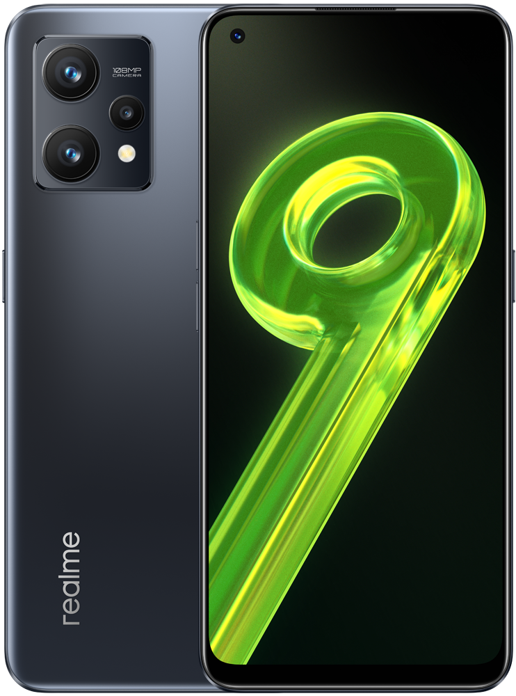

Вам предоставляется возможность увидеть кое-что из лучших.

Смартфон realme С35 4/128Gb зеленый <2SIM4G 6.6" 8х2ГГц 2408х1080 IPS 50/2/0.3+8Мп NFC 5000mAh And11
2 nanosim+MicroSD до 1Tb.Процессор Unisoc T616(6x Cortex-A55 1.8 ГГц, 2x Cortex-A75 2.0 ГГц) Встроенной память 128 Гб, ОЗУ 4 Гб,2408 x 1080 (IPS) 60Гц,Тыловая камера 50+2+0.3Мпикс.Фронтальная камера 8Мпикс.,Wi-Fi, BT, GPS,ГЛОНАСС,. Акк-р: 5000 мАч.(Быстрая зарядка 18Вт),Android 11.Размеры (ВxШxГ,мм)164.4x75.6x8.1мм Вес 189г.Этот смартфон является лучшим в своей категории. Поэтому это является лучшим выбором. Разценки:
А следущий смартфон является любителям непобедимой классики

Смартфон Realme 9 6/128 Gb Черный
Realme 9 получилar экран Super AMOLED с диагональю 6,4 дюйма, разрешением Full HD+, кадровой частотой 90 Гц и пиковой яркостью 1000 кд/кв.м. Сканер отпечатков пальцев встроен в экран, и поддерживает определение ЧСС при касании. В основу аппаратной платформы входит SoC Snapdragon 680, соединенный с 6 ГБ оперативной памяти LPDDR4X и 128 ГБ флеш-памяти UFS 2.2. Емкость аккумуляторной батареи составляет 5000 мА·ч, мощность зарядки – 33 Вт. В качестве ОС выступает Android 12 с интерфейсом Realme UI 3.0. Толщина смартфона 7,9 мм, масса – 178 граммов.Это очень хорошая модель и со стороны цены. Разценки:
А если вы хотите получить более мощный телефон который будет стоять на ровне с игровыми то можем предложить вам следущий смартфон

Смартфон realme 10 128 ГБ белый
realme 10 оснащен процессором MediaTek Helio G99. Аппарат получил 8 ГБ ОЗУ, 128 ГБ встроенной памяти и аккумулятор на 5000 мАч с функцией быстрой зарядки Dart Charge мощностью 33 Вт. Дисплей Super AMOLED с разрешением 2400x1080 и повышенной частотой обновления экрана 90 Гц. Задний блок камеры состоит из главного датчика на 50 Мп и дополнительного модуля разрешением 2 Мп. На передней панели установлена 16-мегапиксельная селфи-камера.Это очень хорошая модель и со стороны цены. Разценки:
Данный смартфон закрывает нашу коллекцию. Вы можете посмотреть на сайтах следущие коллекции.